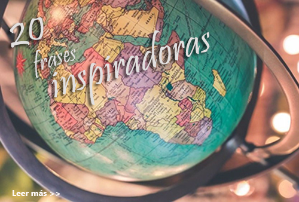

Lo que a estas alturas podrías tener claro es que viajar es un placer del que no deberíamos privarnos por nada del mundo. En estos tiempos viajar es una actividad muy recurrente que realiza todo el mundo, todo el tiempo, por diversas razones; y aunque no todos viajan por placer, todos hemos experimentado al menos una vez la emoción de un paisaje, o de conocer un nuevo lugar o nuevas personas o las risas cuando algo sale mal.
La aventura nos sigue seduciendo como lo ha hecho a lo largo de toda la historia de la humanidad. Necesitamos conocer el mundo en directo, continuamos teniendo las mismas inquietudes de los que fueron pioneros en el viaje. Por eso me gusta esmerarme para preparar las mejores columnas que satisfagan la necesidad de las personas por seguir descubriendo y seguir experimentando. Porque aunque aunque hemos llegado lejos, todavía quedan muchas cosas por descubrir. En esta sección te dejo las columnas con los hechos más interesantes y útiles, para que conozcas más de este pasatiempo que tanto amamos.
|  | ||
| 8 CONFESIONES que los amantes de los viajes jamás harán.
¿Has escuchado que cada moneda tiene dos caras? Si bien viajar es de las mejores cosas, no siempre es de color de rosa. Los amantes de los viajes no paramos de repetir cuánto puede aportar un viaje a nuestra vida, pero la verdad es que hay determinados aspectos que son parte de viajar que solemos omitir, pero que en lo más profundo, no nos gusta y preferiríamos evitar. | 20 Frases inspiradoras que nos recuerdan la belleza de viajar.
¿Buscas frases de viajes para inspirarte a descubrir el mundo? Pues estás de suerte, porque he recopilado algunas de mis frases favoritas sobre viajes. Todos tenemos nuestras propias formas de expresar las cosas que amamos, los amantes de la literatura saben expresarse de muchas formas y sobre muchas cosas. Lo hermoso de la literatura es que aplica para todo. | |
| Artículo original obtenido de VIX | Artículo original obtenido de LA TRAVELISTA |

T R A B A J A M O S P A R A Q U E L O S A M A N T E S D E L A A V E N T U R A |